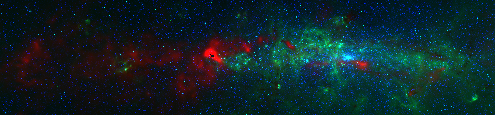
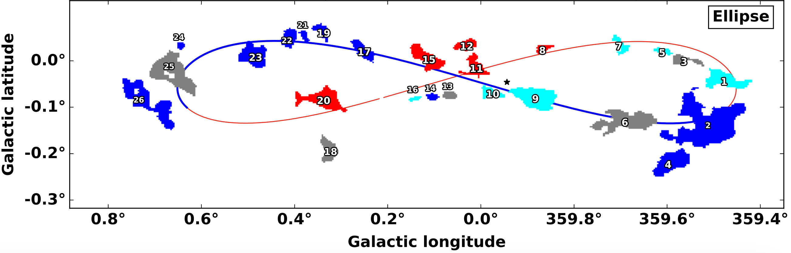

Research

A three-color image of the Milky Way's Central Molecular Zone (CMZ). Red is column density from Herschel, Green is Spitzer 8µm, and Blue is Spitzer 4.5µm.
Galaxy centers control the evolution and energy cycles of galactic nuclei. From the dynamics of gas orbiting and colliding and forming stars, to the feeding of material into the supermassive black holes at their centers, understanding these regions is a key component of modeling the history and evolution of our own Galaxy and our local universe.
I use the center of our own Milky Way Galaxy, the Central Molecular Zone (CMZ), as an example to model other environments. The Milky Way's center is dense, turbulent, and hot, making it a comparable environment to starburst galaxies. It is our nearest and dearest Galactic Center. In other words, perfect for getting an in-depth study of what controls star formation in extreme environments.

From Lipman et al. (2025) showing the near (blue) and far (red) positions of molecular clouds in the CMZ compared to an elliptical orbital model.
Determining the 3D Geometry of the CMZ
Knowing how gas moves around the Galactic Center is a key piece of information for understanding how the Galaxy evolves. When, where, and how many star form is largely connected to where the gas that fuels star formation travels and builds up.